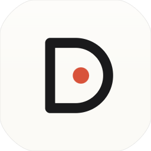
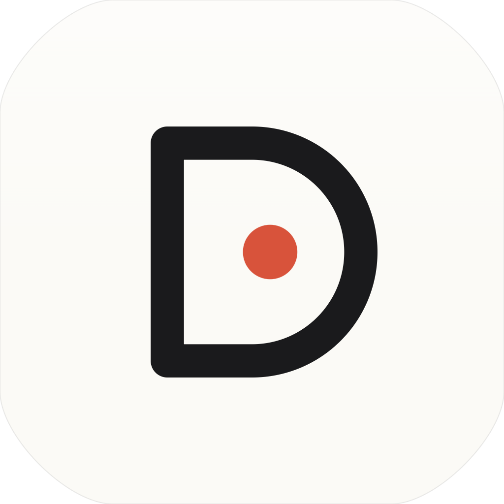

Das fertige Icon-Set für App und Menübar.
Alle macOS-Größen vom 16er-Finder-Icon bis zum 1024er-Dock-Icon, plus die drei Menübar-Zustände als Template-Images für Light- und Dark-Mode.
Master · 1024 × 1024
Asset für App-Store / Dock / FinderAperture D
Der Buchstabe „D" ist als offene Apertur gezeichnet — die Innenfläche trägt den Aufnahme-Punkt. Bei Idle ist der Punkt der Marken-Akzent, bei aktiver Aufnahme wird er zum Status-Signal.
App-Icon · AppIcon.iconset
10 PNGs · alle nativen macOS-Größen

Menübar · Template Images
Drei Zustände · Light- und Dark-Mode-tauglichKontaktbogen · alle drei Zustände nebeneinander
Glyph-Logik im VergleichIdle
Punkt als Outline — bereit, wartet auf fn.
Recording
Punkt gefüllt, in System-Akzentfarbe rot getintet.
Transcribing
Drei Punkte (Ellipsis) — Verarbeitung läuft.
Dateistruktur
Direkt nach Assets.xcassets/ kopierbarIntegration in Dicto
Xcode-Asset-Catalog + SwiftUI / AppKit1 · App-Icon einbinden
Den Ordner AppIcon.iconset nach Assets.xcassets/AppIcon.appiconset/ verschieben. Xcode liest die enthaltene Contents.json.
Alternativ für .icns-Export:
# Terminal, im Projektroot iconutil -c icns icon-set/AppIcon.iconset \ -o Dicto.icns
2 · Menübar-Image als Template
In MenuBarController.swift nach Zustand wechseln. Wichtig: isTemplate = true, damit macOS automatisch tintet (weiß auf Dark-Mode-Bar, schwarz auf Light-Mode-Bar).
switch state { case .idle: image = NSImage(named: "MenuBar-idle") case .recording: image = NSImage(named: "MenuBar-recording") case .transcribing: image = NSImage(named: "MenuBar-transcribing") } image?.isTemplate = true statusItem.button?.image = image